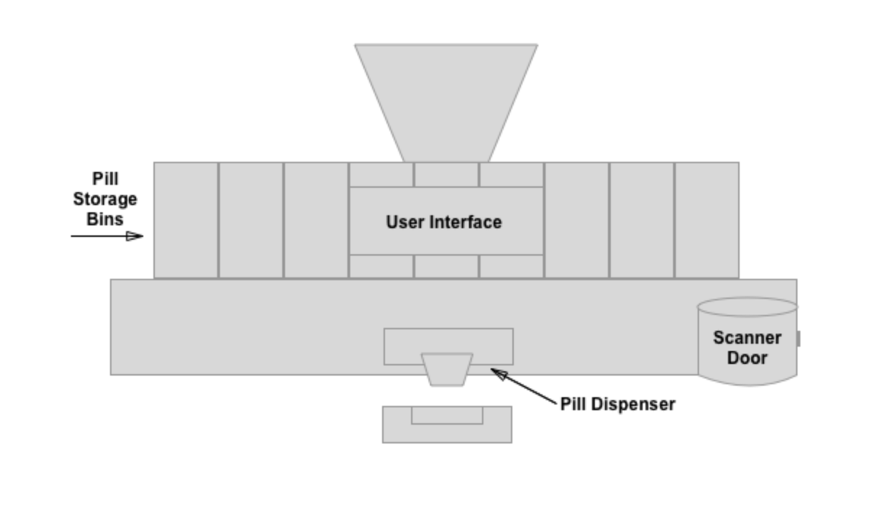
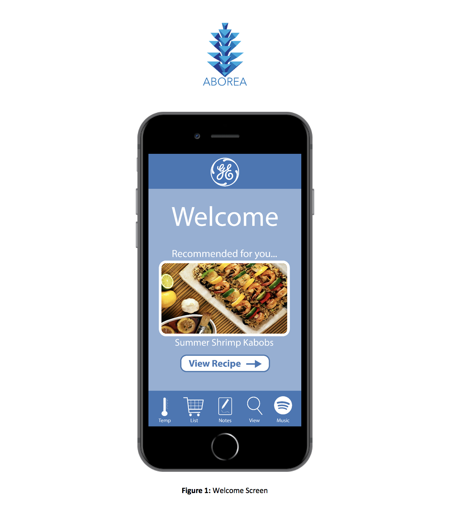
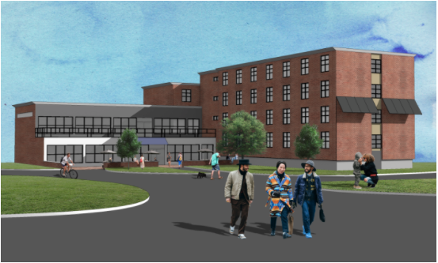
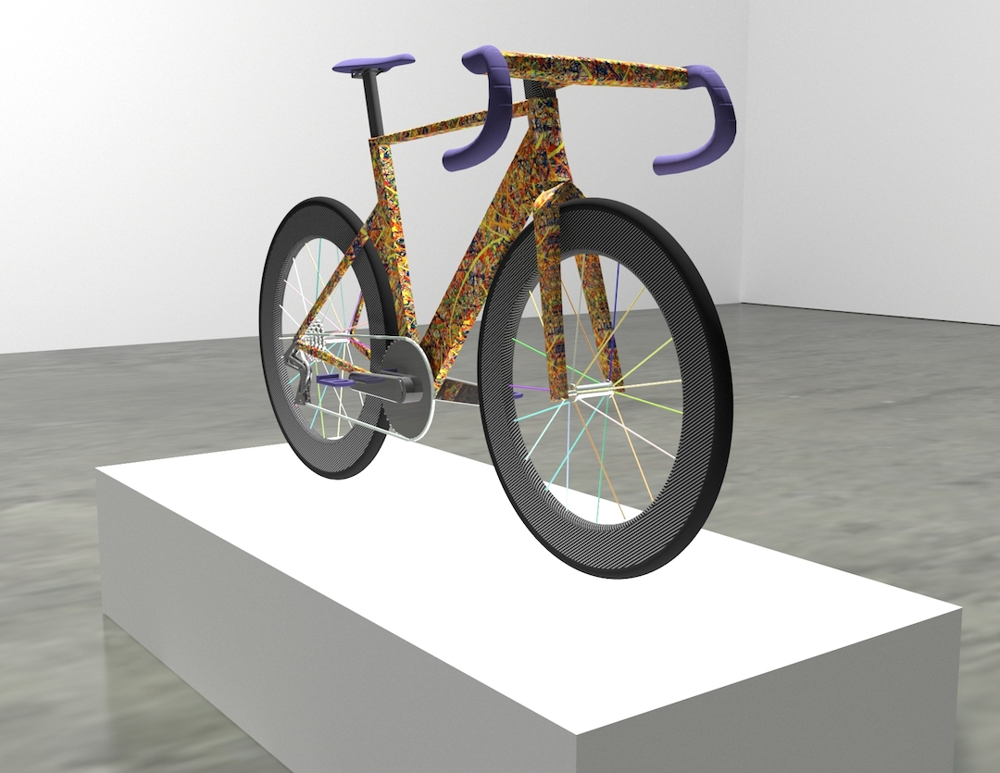
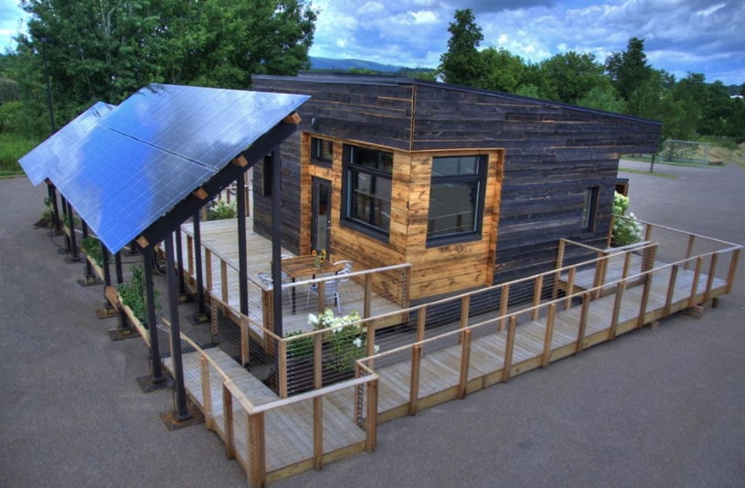

Ryan Biette
I am currently a senior at Tufts University in the School of Engineering pursuing a combined B.S./M.S. in Human Factors Engineering and a minor in Entrepreneurial Studies from the Gordon Institute. My other academic interests lie in Environmental Studies, Design, Urban Planning and Computer Science. In my career, I hope to create solutions and products that make positive and tangible impacts in people's lives by building empathy with people and their needs. When designing, I strive to create solutions in a environmentally and socially sustainable way, while also reaching the desired business goals.
Portfolio
- The SmartCane
- Spenser
- Design of Distraction Research PaperFor an engineering psychology class, I wrote a research paper investigating the relationship between distraction and the design of the built environment. From a psychological perspective, it is fascinating to see how a human's psychological heuristics and characteristics can be affected both positively and negatively by the design of the physical space around them. Read the paper.
- General Electric Consulting ExerciseFor my User Interface Design Class, we ran hypothetical design consultancy firms. This project was to create the conceptual start to a smart refrigerator connected application. The design draws upon GE's clean lines and modern feel that was desired. A simple, crisp color scheme and typography choice was chosen. To learn more about the usability of the application interface, read the full report here.
- Tufts Student Solar ProjectI am a part of the Tufts Energy Group and a project to make solar more accessible to students has been talked about for about two years. In the summer of 2017, I took over as the lead of the project. We work with a local solar installer, Tufts facilities and Tufts administration members, and most importantly Tufts students to help guide the direction of this project. Construction has started and the system as shown is slated to be fully installed by November 2018 for students to engage with and learn about solar technology. This experience has taught me a great deal about project management, communication, and large-scale project development. I am excited that it will be completed within the next two months.
- Final Project for Computer Aided Design I modeled this using the Autodesk Suite. My idea started from an existing bicycle, but I modeled the entire piece from scratch. To see the animation, click here. The process involved sketches on paper, followed by iterations of each part in modeling software.
- Department of Energy Solar Decathlon - Team Middlebury College I volunteered to construct Team Middlebury College's entry into the Department of Energy's 2013 Solar Decathlon. Our house (pictured here) placed eighth in the global competition, facing competitors such as the entire nation of Austria. The structure includes many user-centered design choices, renewable energy products such as a green roof, and is completely self powered. Currently the house is used as specialty student housing. To learn more, click here.
- This Website!Using bootstrap and my web programming skills, I designed this responsive website, wrote the code, and published it to the web. If you spot any errors or have suggestions, please let me know! I am always looking to improve.

My grandmother has Alzheimer's disease and is losing her mobility. Over the Thanksgiving weekend, it became clear that finding my grandmother's cane was a large issue in her life and in my family's life. I took it upon myself to pitch this problem to my design and engineering club, MAKE. Over the course of the semester, we created a radio-controlled device that allows my grandparents to locate my grandmother's cane. This saves an average of thirty minutes per day and helps foster my grandmother's independence --something Alzheimer's takes away.
As a class exercise on task analysis and automation, I worked with a group to create Spenser - an automated pill management and dispensing system. We conducted a hierarchical task analysis and designed a system to help manage medications with those who struggle with this task. Read the full report here: Spenser: Medication Management System
Experience
User Experience and Human Factors Engineering Intern
Startup creating Device-Based Therapies For Neurodegenerative Diseases
Crew Member
Adventure Food Company
Monitoring/Data Analyst Intern
Solar Energy Installation and Maintenance
Engineering Intern
Agricultural Technology Start-up
Mathematics Tutor
Tutor mathematics topics to local middle and high school students
Education
Tufts University School of Engineering
GPA: 3.63
Middlebury Union High School
Skills
- Engineering Psychology
- Computer Aided Design
- Web Programming
- Data Structures
- Materials Science
- Environmental Economics
- Human Factors Product Design
- User Interface Design
Blog
medium.com/@rbiette3I recently started a blog. Here I plan to write about projects I am working on, interesting industry news, and my thoughts on technology.
Interests
Outside of school and work, I love biking (road and mountain), backcountry skiing, cooking, and reading. I also play the baritone and alto saxophone mostly with smaller groups. Issues that I am particularly passionate about include affordable housing, climate change, and education.
Growing up in New England, the outdoors has shaped me into who I am and is why I enjoy living sustainably. I enjoy reading about topics such as environmental science, emerging technologies, economics, and psychology.